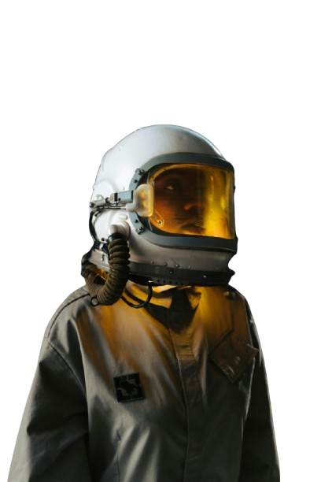

A New Tool for Understanding Spaceflight Experiments
Biological experiments conducted in space offer invaluable insights into how life adapts to extraterrestrial environments. However, the complexity of these experiments often hinders their accessibility to a broader scientific community